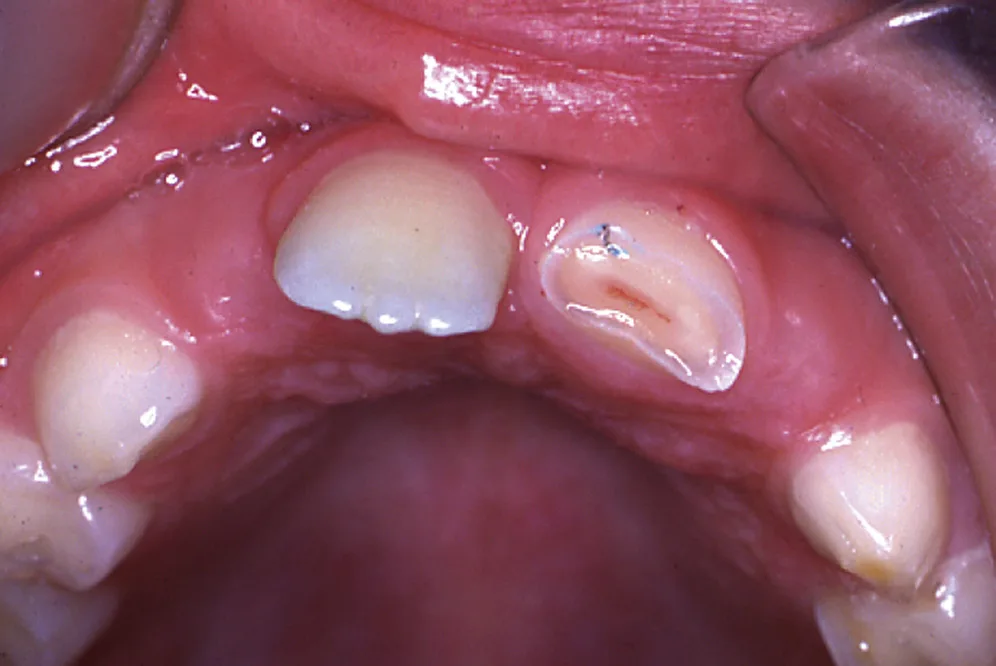
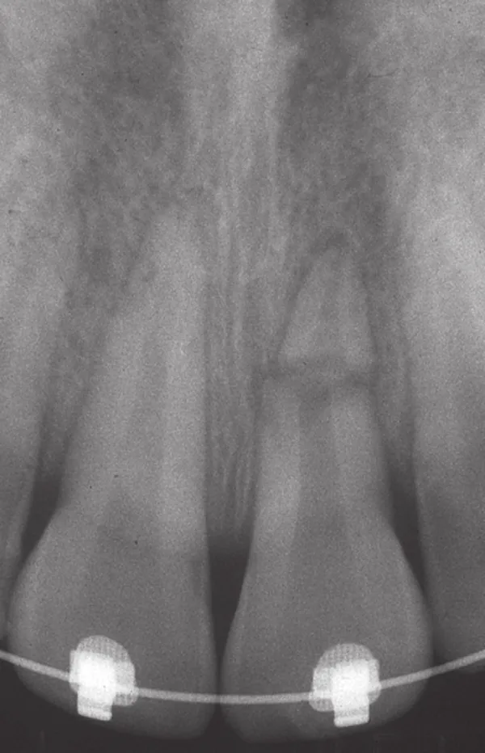

نسخه استخراجشده؛ ترجمه یا تأیید علمی انجام نشده است. وضعیت: captured
۱. شکستگی مینا — فقط مینا. صاف کردن لبه یا ترمیم کوچک کافی است.
۲. شکستگی مینا و عاج، بدون اکسپوژر پالپ — عاج باز شده ولی پالپ نه. پوشاندن فوری عاج اهمیت دارد: توبولهای باز، مسیر مستقیم باکتری به پالپاند.
۳. شکستگی با اکسپوژر پالپ — درمان پالپ لازم است. در کنار مرحلهی تکامل ریشه، دو متغیر انتخاب درمان را تعیین میکنند: زمان سپریشده از حادثه، و اندازهی اکسپوژر. در دندان دائمی، اکسپوژر کوچکی که در چند ساعت اول درمان شود پالپکپ را ممکن میکند؛ اکسپوژر بزرگتر یا دیرتر، و هر اکسپوژر در دندان دائمی جوان، پالپوتومی پارشیال میخواهد.
قاعده: هرچه عاج یا پالپ بیشتر باز بماند، آلودگی عمیقتر میرود. پوشاندن، خودش بخشی از درمان است.

شکستگی ریشه: پیشآگهی به محل خط شکستگی بستگی دارد — هرچه به اپیکال نزدیکتر، بهتر؛ هرچه به سرویکال نزدیکتر، بدتر.
دلیلش ساده است: قطعهی تاجی هرچه بلندتر باشد، اهرم بیشتری میسازد و تثبیت سختتر میشود.
تشخیص به چند زاویه نیاز دارد — یک رادیوگرافی منفی، شکستگی را رد نمیکند.
شکستگی تاج-ریشه: از تاج شروع میشود و به زیر لثه میرود؛ پیچیدهترین نوع، چون هم پالپ و هم تکیهگاه درگیرند.
شکستگی آلوئول: چند دندان با هم حرکت میکنند — نشانهی درگیری خود استخوان.

نوع سؤال: ساخت کلمه · 6 خانه
حروف منبع: و · ئ · و · ل · ل · آ